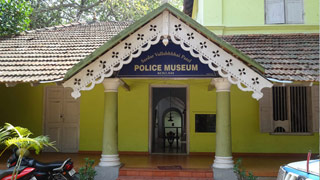

Police Museum
Police Museum
Sardar Vallabhbhai Patel Police Museum is a museum that traces the history and growth of the police force in India. It is located just opposite the Kollam Junction Railway Station in Kollam, India. The museum is dedicated to barrister and statesman, Vallabhbhai Patel.